Moonbloom
Starlit flowerPale petals that look cut from the night sky itself.
An island game for quiet evenings
Unclaimed Acres is a calm farming and creature game on the WAX blockchain. Grow strange, glowing things. Meet gentle creatures. Play at your own pace.
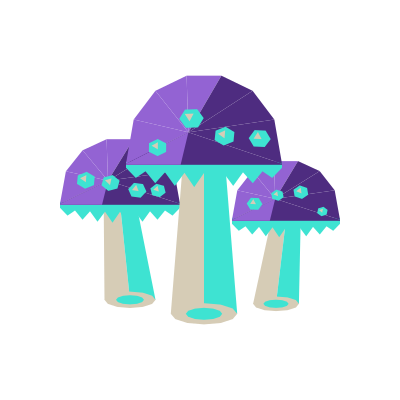
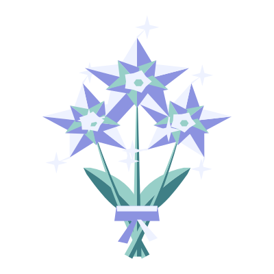
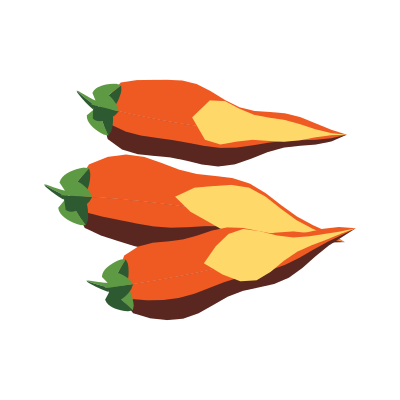
The one rule
Unclaimed Acres is made to be played slowly. Visit for a minute before bed or stay for a whole evening. There is nothing to race and no one to keep up with; your island is simply there, and it is yours.
The night garden
Every one of the 64 crops is drawn through its whole life. Here is a moonbloom, from a handful of crescent seeds to a starry bouquet, and the quiet wilt that waits if it's left too long.
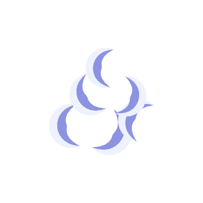
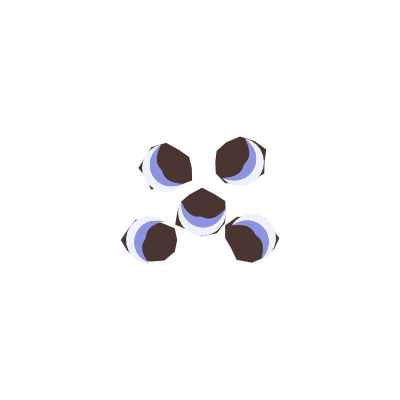
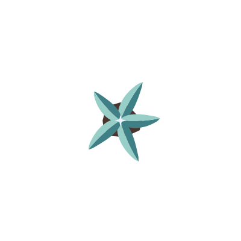
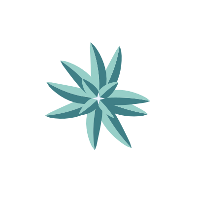
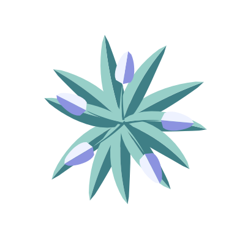
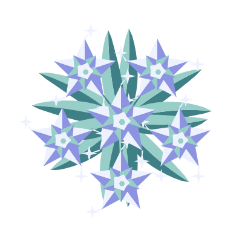
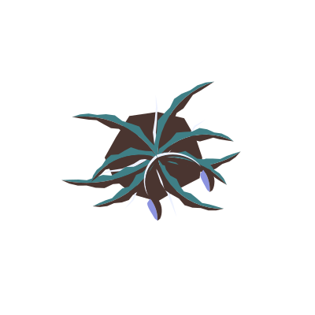
Pale petals that look cut from the night sky itself.
Speckled caps with gills that shine a soft sea-glass teal.
Each pod ends in a little flame, warm as a hearth.
And 61 more, from carrots and rice to dragon fruit and pineberries.
Company after dark
More than 50 creatures share the islands, the everyday and the mythical. A few of them are at their best once the sun has gone down.
Small, slow, and always lit.
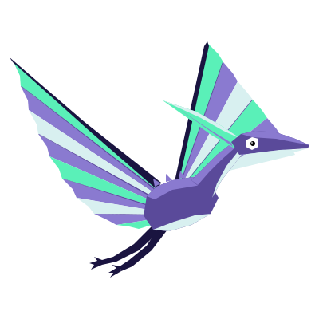
Wings the colour of northern lights.
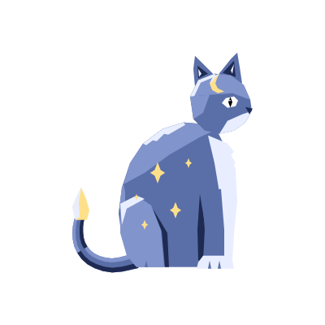
Keeps the night sky in its coat.
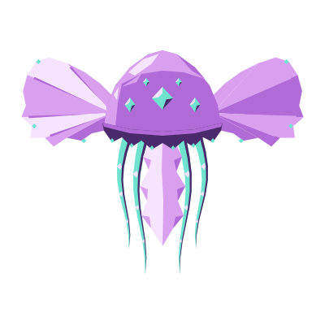
Drifts through air like water.
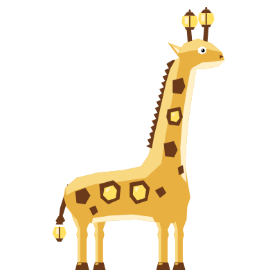
Carries two little lamps to see by.
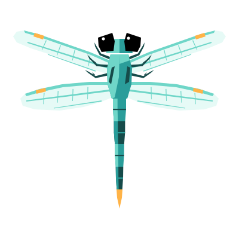
Wings like frosted window panes.
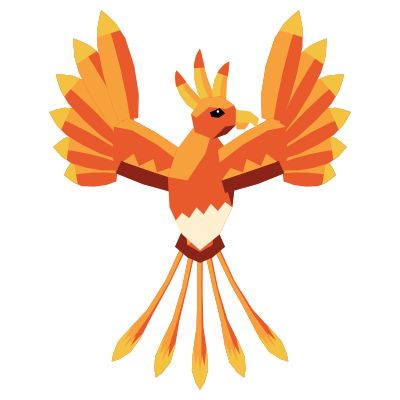
A warm glow on the coldest night.
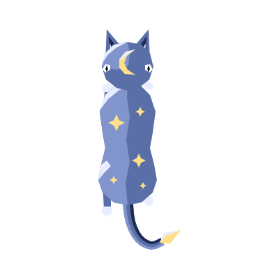
Seen two waysEvery creature is drawn from the side, and again from above, the way you'll spot it wandering across your island map.
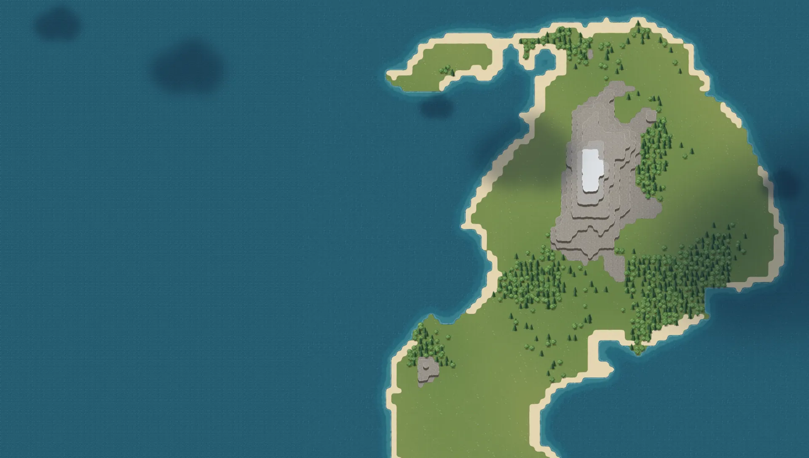
Your island
Each island is generated, stored on the WAX blockchain and owned by your wallet. Yours might have
Connect a wallet and follow Unclaimed Acres as it grows, one evening at a time.
Works with WAX Cloud Wallet · Wombat · Anchor